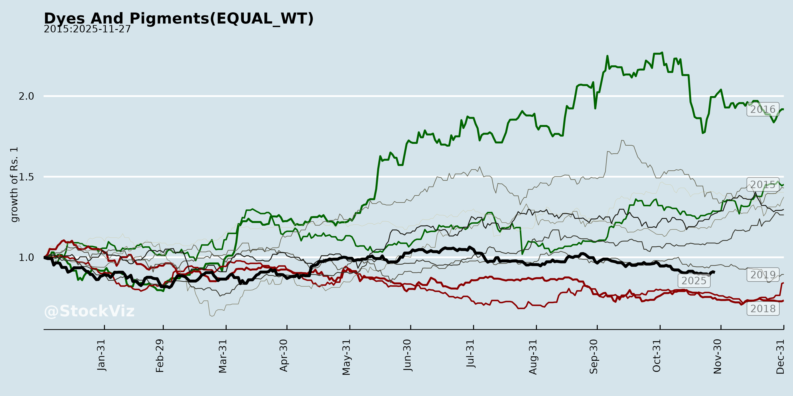
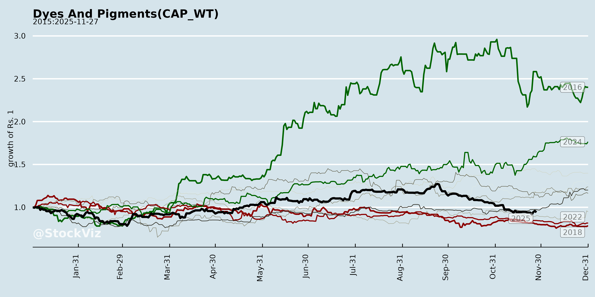
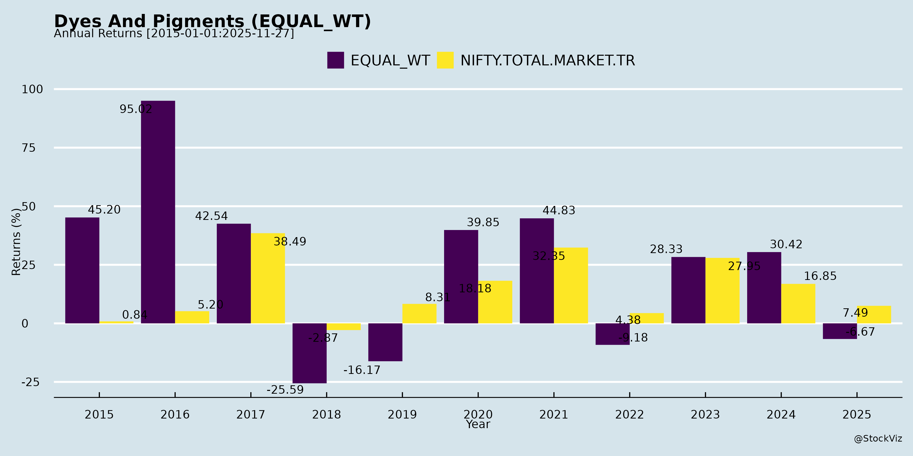
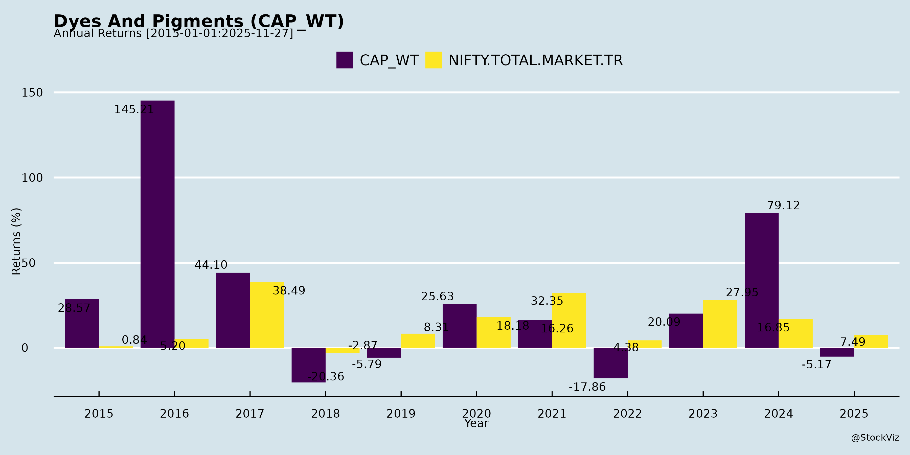
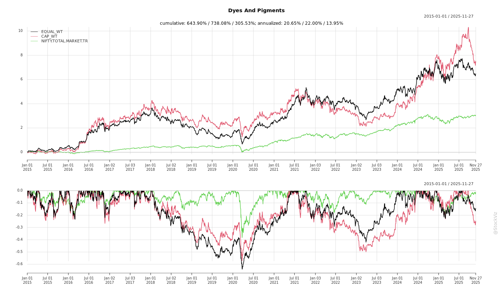
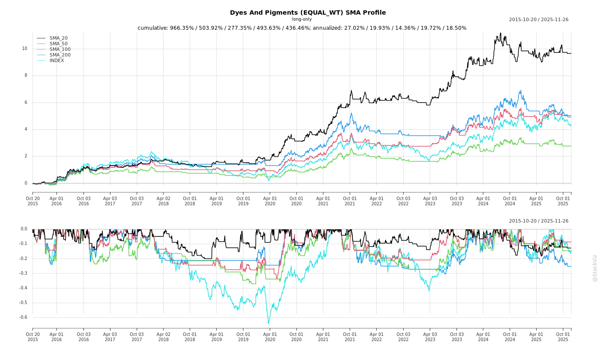
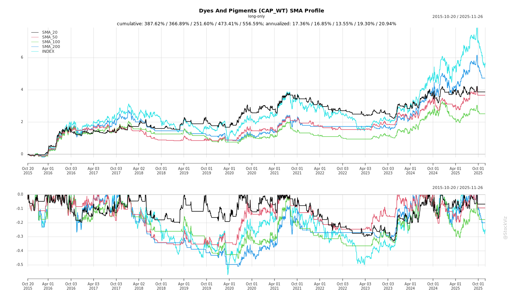
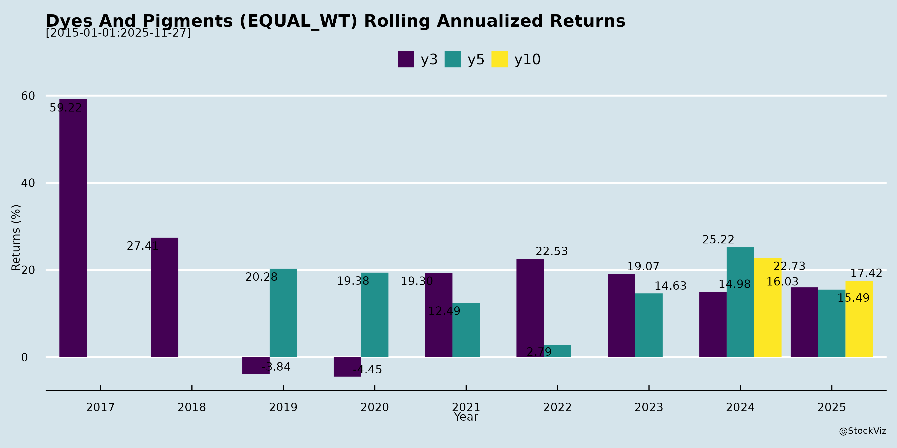
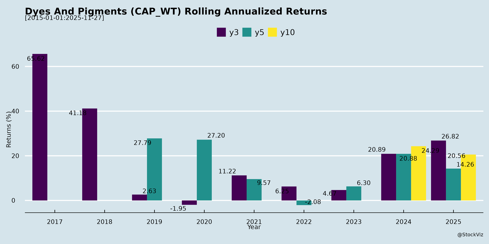

Annual Returns




Cumulative Returns and Drawdowns

SMA Scenarios


Current Distance from SMA
Rolling Returns


EBIT (% of Industry Total)
Revenue (% of Industry Total)
AI Summaries
Analyst
asof: 2025-11-27
Indian Dyes & Pigments Sector Analysis
Based on Q1/Q2 FY26 earnings transcripts and announcements from key players (AksharChem, AsahiSongwon, Bhageria, Bodal Chemicals, Kiri Industries, Shree Pushkar, Sudarshan Chemical). The sector shows resilient growth amid volatility, driven by domestic demand recovery, exports, and diversification, but faces execution and external pressures.
Tailwinds (Positive Drivers)
- Revenue & Margin Growth: Strong YoY topline expansion (Bodal: +8% Q1 revenue, +40% EBITDA; Shree Pushkar: +45% Q2 revenue, +37% EBITDA; Kiri standalone: +34% Q2). Improving realizations from RM price stability and product mix optimization.
- Policy Support: Anti-dumping duties (ADD) on imports like TCCA (Bodal expects Q3/Q4 benefits as channel inventories deplete).
- Export Momentum: India as preferred global supplier (Bodal); steady reactive dyes enquiries (Kiri); low US exposure mitigates tariff risks (~1% for Bodal).
- Capacity Ramp-Ups & Diversification: Benzene derivatives (Bodal: targeting 70-80% utilization, ₹300 Cr FY27 revenue); Fertilizers/Chemicals expansions (Shree Pushkar: new 3L MT facility by FY28, ₹1200 Cr revenue potential); Copper diversification (Kiri).
- Sustainability Edge: Solar expansions (Shree Pushkar: 20.6 MW DC), zero-waste models enhancing cost efficiency and ESG appeal.
- Balance Sheet Strength: Debt reduction plans (Bodal: ₹150-175 Cr FY26 paydown); Surplus cash (Shree Pushkar: ₹162 Cr deposits).
Headwinds (Challenges)
- RM Volatility & Pricing Pressure: Declines in aniline, ethylene, sulfur, naphthalene impacting intermediates/dyestuffs (Bodal: -4-10% YoY revenue degrowth in segments); Benzene margins squeezed by competition.
- Operational Delays: Power shortages/monsoons delaying trials (Shree Pushkar Units 5/6 to Feb 2026); Sub-90% utilization (Bodal chlor-alkali; Shree: 65-70%).
- Subsidiary Issues: Hyperinflation losses (Bodal Turkey: ₹1.45 Cr); High finance/legal costs (Kiri: ₹61 Cr Q2 finance, ongoing DyStar litigation).
- Demand Seasonality/Geopolitical: Textile slowdowns (Haryana floods impacted Shree); US tariffs/Europe shifts affecting indirect exports.
- Margin Normalization: EBITDA 10-12% (Bodal/Shree), down from peaks (2014-19: 18-20%), due to cyclical pressures post-Ukraine war.
Growth Prospects
- Near-Term (FY26): Revenue visibility ₹1900-2000 Cr (Bodal), ₹1000 Cr (Shree Pushkar @8% PAT); H1 momentum to sustain via utilization ramps (Bodal benzene/TCCA: ₹100 Cr FY26).
- Medium-Term (FY27-29): ₹2500-3000 Cr potential (Shree via Units 5/6/8); Blended EBITDA 12-15% (Bodal); Export-led recovery in dyes/intermediates.
- Long-Term Catalysts: Greenfield expansions (Shree Meghnagar); Strategic diversification (fertilizers, copper); Global shift from China boosts India share.
- Investor Engagement: Active analyst meets/plant visits (AksharChem, Sudarshan, Bhageria) signal confidence.
Key Risks
- Execution Delays: Project timelines (power/approvals); Copper smelter (Kiri: 36 months to trial Dec 2028).
- Litigation/Regulatory: DyStar sale delays (Kiri: extensions to Dec 2025; potential liquidation).
- Macro/External: Geopolitical tensions, RM/import surges, forex volatility; US/EU trade barriers.
- Financial: Debt overhang (Bodal ₹857 Cr total; Kiri borrowings); Interest costs amid capex (Shree/Kiri internal accruals mitigate).
- Cyclicality: Subdued volumes if textile demand weakens; Competition in new segments (benzene/TCCA).
Overall Outlook: Sector resilient with 10-20% YoY growth potential, buoyed by expansions and policy tailwinds. Focus on utilization/debt reduction key to sustaining 10-12% margins. Risks skewed external/executional, but strong liquidity buffers most players.
Indian Dyes & Pigments Sector Analysis: Headwinds, Tailwinds, Growth Prospects, and Key Risks
Based on the provided documents from key players (AksharChem, Asahi Songwon, Bhageria Industries, Bodal Chemicals, Heubach/Sudarshan Colorants, Kiri Industries, Poddar Pigments, and Sudarshan Chemical), here’s a synthesized analysis of the Indian Dyes & Pigments sector. The insights draw from Q1/Q2 FY26 financial results, earnings transcripts, board outcomes, expansions, and disclosures (as of Nov 2025). The sector shows resilience amid diversification but faces operational and external pressures.
Tailwinds (Positive Factors)
- Strong Revenue Momentum: YoY growth evident across peers—Bhageria +55% Q2 revenue (₹260 Cr), EBITDA +47%; Asahi consolidated revenue ₹273 Cr H1 (+ve YoY); AksharChem revenue up 13% Q2 YoY (₹89 Cr); Heubach stable at ₹394 Cr H1. High plant utilizations (Bhageria 95-97%) signal robust domestic/export demand from textiles, polymers, and dyes.
- Capacity Expansions & Product Diversification: Bhageria expanding H-Acid (to 500 TPM, +₹50-75 Cr revenue), launching Plasticizers (2,000 TPM) & Ethoxylates; Asahi strong in Pigments & Life Sciences (API intermediates). Shift to high-margin specialties (plasticizers, APIs) enhances mix.
- Export Resilience: Focus on SE Asia/Europe (Bhageria, Asahi); less US exposure mitigates tariff risks. China dumping easing (Bhageria transcript).
- Cost Efficiencies & Renewables: Bhageria’s 32 MW solar (₹152 Cr capex, 16% equity IRR, ₹22 Cr annual revenue, 75-80% EBITDA margin) for captive use; insurance claims offsetting fire losses (Akshar ₹170L exceptional gain; Heubach advance ₹1.5 Cr).
- Credit & Governance: CARE A1 rating (Akshar); board changes/insider disclosures indicate stability (Asahi, Heubach/Sudarshan).
Headwinds (Challenges)
- Margin Compression: Bhageria EBITDA margins dipped to 10% (from 15-16%) due to RM inflation (sulphuric acid, US/EU impacts); Akshar Q2 loss (₹141L pre-tax) from fire/expenses; Heubach revenue soft QoQ (₹183 Cr Q2).
- Operational Disruptions: Multiple fire incidents—Akshar (May 2024, ₹402L loss, partial settlement ₹543L); Heubach (Jan 2025 warehouse fire, ₹10 Cr loss, ₹50L exceptional Q2). Delays in insurance full recovery.
- Textile/Export Volatility: US tariffs pressuring textile exports (Bhageria notes no major impact yet); global slowdown risks.
- Deal Delays: Kiri’s DyStar stake sale (37.57%, USD 676M) extended to Dec 2025 due to regulatory hurdles (China approvals pending).
- Input Cost Pressures: RM volatility (sulphuric acid capacity additions like Kutch Copper); power/fuel expenses high (Akshar ₹139 Cr H1).
Growth Prospects
- Revenue Guidance & Scale: Bhageria eyes ₹725-775 Cr chemicals FY26 (from ₹597 Cr FY25), +₹55 Cr from H-Acid Q4; Asahi H1 NP ₹469L (consolidated), Pigments/API segments scaling. Sector FY26 potential: 15-20% topline growth via exports (10-15% market share per Bhageria).
- High-Margin Verticals: Plasticizers/Ethoxylates (Bhageria, exports > domestic); Pharma APIs (Asahi/Bhageria Dexamethasone, regulatory filings for US/Japan DMF); renewables integration for 75-80% EBITDA margins.
- Capex Efficiency: Low-capex expansions (Bhageria H-Acid ₹5 Cr); brownfield debottlenecking. Total addressable market: H-Acid (India 3KT/month), VS (6KT), Gamma Acid (300T, India-only).
- Structural Shifts: Global China+1 realignment favors India; backward integration (Bhageria 40% captive sulphuric acid).
- Outlook: 12-18% CAGR to FY28 possible with 13-14% margins (Bhageria), driven by specialties (30-200% gross margins in pharma exports).
Key Risks
| Operational |
Fires/disruptions (Akshar/Heubach); high capex gestation (Bhageria pharma 2-5 yrs breakeven). |
Insurance; GMP/USFDA plants. |
| Commodity/Price |
RM volatility (sulphuric acid, 8DM imports from China); pricing linked monthly but pass-through lags. |
Backward integration; monthly contracts. |
| Demand/Geo |
Textile slowdown (US tariffs); China dumping (easing but monitored). |
Export diversification (SE Asia/Europe). |
| Regulatory/Execution |
Deal delays (Kiri DyStar); filings (DMF/CEPs). |
Legal advice; escrow deposits. |
| Financial |
Margin erosion (10-16% range); debt for capex (Bhageria solar). |
Strong balance sheets (Heubach ₹556 Cr equity); A1 ratings. |
| Compliance |
Insider trading/ governance (Sudarshan disclosure); PIT code amendments (Poddar). |
Structured databases; pre-clearance. |
Summary
The Indian Dyes & Pigments sector is cautiously optimistic for FY26, with tailwinds from expansions/diversification (e.g., Bhageria/Asahi leading) offsetting headwinds like RM inflation/fires. Growth prospects are strong (15-20% revenue, 13-14% margins) via specialties/exports, but risks center on execution (regulatory delays, ops disruptions). Peers like Bhageria (volume-led surge) exemplify resilience; monitor Q3 for tariff/China impacts. Overall sector rating: Positive with moderate risks—favor diversified players with capex visibility.
Data as of Nov 2025; sector avg. H1 revenue growth ~10-15% YoY.
Investor
asof: 2025-11-27
Indian Dyes & Pigments Sector Analysis (Based on Q2/H1 FY26 Announcements & Transcripts)
The provided documents from key players (AksharChem, AsahiSongwon, Bhageria, Bodal Chemicals – most detailed, Kiri Industries, Shree Pushkar, Sudarshan) highlight a recovering sector with 12-45% YoY revenue growth across most firms (e.g., Bodal: 12% H1 revenue to ₹9,586 Mn; Shree Pushkar: 45% Q2 to ₹255 Cr; Kiri standalone: 34% Q2). Focus is on dyes/dye intermediates (60-70% revenue), basic chemicals, and diversification (fertilizers, copper). Sector benefits from textile recovery but faces volatility. Below is a structured summary:
Headwinds (Challenges Pressuring Margins/Operations)
- Raw Material Volatility: Sulphur, naphthalene, petrochemicals (e.g., Bodal: Basic Chemicals +76% due to sulphur prices; Kiri: Intermediates like vinyl sulphone/H-Acid affected).
- Demand Sluggishness & Competition: Benzene downstream (Bodal: margins pressured by competition/slow demand); intermittent end-user (textile/paper/leather) weakness; floods in key regions (Shree Pushkar: Haryana-Punjab impact).
- Operational/Capex Overheads: Higher depreciation/finance costs from expansions (Bodal: EBITDA margins stable at 9-10% despite); project delays (Shree Pushkar: Unit 5/6 electricity/monsoon delays to Feb 2026).
- Legal/Regulatory Delays: Kiri’s DyStar stake sale (37.57%, ~$696 Mn potential) extended to Dec 1, 2025 due to China approvals (NDRC/MOFCOM); high legal costs (Kiri: EBITDA loss partly due).
- Export/Geopolitical Pressures: US tariffs/EU shifts impacting textiles (Sudarshan/Shree Pushkar noted); global freight normalization but China+1 incomplete.
Impact: EBITDA margins 8-10% (Bodal: 9.9% H1; Shree Pushkar: 10.3% Q2); PAT volatility (Kiri: losses despite revenue growth).
Tailwinds (Positive Drivers)
- Demand Recovery: Textile downstream steady (Bodal: Dye Intermediates +2% YoY, +7% QoQ; Chlor Alkali +9%); improving volumes (Shree Pushkar: Chemicals +11% YoY volumes).
- Pricing Power & Realizations: Higher prices (Bodal: Basic Chemicals led growth; Shree Pushkar: 40-50% revenue jumps).
- Backward Integration/Cost Controls: Captive consumption (Bodal: 40% Basic Chemicals to intermediates); solar/renewables (Shree Pushkar: 20.6 MW DC by FY26, saving power costs); zero-liquid discharge (all firms emphasize ESG).
- Subsidiary/JV Strength: Bodal subsidiaries (Turkey/China/Indonesia) positive; Kiri’s Lonsen JV strong.
- Policy Support: Atmanirbhar Bharat, China+1 (Bodal: ~25% exports, India dyes leader); export awards (Bodal/Shree Pushkar).
Impact: EBITDA growth 27-50% YoY (Bodal: ₹946 Mn H1; Shree Pushkar: 37.5% Q2); cash-rich balance sheets (Shree Pushkar: ₹162 Cr non-lien deposits).
Growth Prospects (High Visibility, 20-50% Revenue CAGR Potential)
- Capacity Expansions: | Company | Key Projects | Capacity Add | Timeline/Revenue Impact | |—————|——————————-|————–|————————-| | Bodal | Benzene downstream, Chlor Alkali | Multi-product | Gradual QoQ growth | | Shree Pushkar| Unit 5/6 (Ratnagiri), Unit 8 (Meghnagar) | 300K MTA fertilizers | FY28: +₹1,200 Cr; FY29: Total ₹2,500-3,000 Cr | | Kiri | Copper/fertilizer (Indo-Asia) | 500K TPA copper | Trial Dec 2028 |
- Diversification: Fertilizers (Shree Pushkar lead); copper (Kiri); dyes marketing arm (Dyecol).
- Export/Domestic Mix: 20-30% exports (Bodal: 22% H1); Gujarat dominance (75% dyes share).
- Sustainability Edge: Bluesign/ZDHC/ISO certifications; solar (cost savings ~₹10-14 Cr/yr for Shree Pushkar).
- Guidance: Shree Pushkar: FY26 ₹1,000 Cr revenue, 7.5-8% PAT; Bodal: Volumes/margins improving.
Outlook: 15-25% sector revenue growth FY26; 20%+ CAGR to FY28 on expansions (textile recovery + diversification).
Key Risks (High/Medium/Low Probability-Impact)
| Project Delays |
Electricity/monsoon (Shree Pushkar Units 5/6); approvals (Kiri DyStar). |
Internal accruals; pursuits. |
High |
| RM/Commodity Volatility |
Sulphur/petrochem prices; floods. |
Backward integration. |
High |
| Legal/Regulatory |
DyStar extensions/defaults (Kiri: $1.9 Bn valuation at risk). |
Singapore court; 2nd bidder ready. |
High |
| Demand/Geopolitical |
Textile slowdown; US/EU tariffs; China competition. |
Diversification; exports. |
Medium |
| Capex Funding |
₹350-500 Cr expansions (debt-free targeted). |
Internal accruals/preferential. |
Medium |
| Currency/Inflation |
Rupee depreciation; hyperinflation in subs (Bodal). |
Hedging/exports. |
Low |
Overall Sector Summary: Optimistic with Resilience. Q2/H1 FY26 shows robust recovery (revenue +17-45% YoY) driven by pricing/volumes, but margins capped at 8-10% by costs/volatility. Tailwinds (expansions, integration) outweigh headwinds; growth to ₹15,000-20,000 Cr sector revenue by FY28 via capacity/dDiversification. Monitor: Kiri DyStar (catalyst/risk); execution risks. Strong ESG/compliance positions India as China+1 beneficiary. Recommendation: Positive; watch Q3 volumes.
Press Release
asof: 2025-11-27
Indian Dyes & Pigments Sector Analysis (Based on Q1/Q2 & H1 FY26 Announcements)
The analysis draws from recent disclosures by key players: Asahi Songwon Colors, Bhageria Industries, Bodal Chemicals, Shree Pushkar Chemicals & Fertilisers, and Sudarshan Chemical Industries. The sector shows mixed performance—declines in legacy pigment segments offset by diversification and expansions—amid export dependency and global headwinds.
Headwinds
- Demand Weakness in Key Export Markets: US shipments “virtually absent” (Asahi) due to tariff uncertainty (despite CPC Blue exemption); persistent Europe slowdown impacting 50%+ of sales for majors like Asahi. Result: Revenue declines (Asahi: -14.62% YoY Q2; blue business subdued).
- Pricing Pressures: API realizations down ~40% post-acquisition (Asahi), dragging segment profitability.
- Subdued Capacity Utilization: Blue pigments below optimal levels (Asahi), leading to Q-o-Q revenue drops (-19.34%) and EBITDA margins contracting (e.g., Asahi H1: 8.45% vs. 10.45% YoY).
- Overall Topline Volatility: Selective declines amid Y-o-Y softness (Asahi consolidated revenue -1.85% H1).
Tailwinds
- Diversification Success: Strong cash flows from API/Azo segments (Asahi: doubled to ₹36.46 Cr in Sep’25); new launches like plasticizers/ethoxylates (Bhageria) and dyes/fertilizers growth (Shree Pushkar: chemicals +40% YoY Q2).
- Robust Growth in Peers: Explosive Y-o-Y gains (Bhageria: net profit +83% H1; Shree Pushkar: revenue +45.2% Q2, PAT +36.7%; Sudarshan: revenue +295% Q1 post-Heubach acquisition).
- Operational Efficiencies: EBITDA margins stable/improving (Bhageria: +116 bps H1; Shree Pushkar: 10.8% H1); energy conservation awards (Bodal Unit-12: 2nd prize in Chlor-Alkali).
- Debt Reduction & Balance Sheet Strength: Accelerated deleveraging via cash flows (Asahi); reaffirmed ratings (Bhageria: CARE A/A1).
Growth Prospects
- Capacity Expansions: Bhageria H-Acid (+100 MT/M, +₹250-55 Cr revenue); Shree Pushkar (3L MTPA fertilizers by FY28 at ₹350 Cr; Ratnagiri Units 5/6); Sudarshan integration of Heubach for global scale (1,600+ products, 19 sites).
- Product Diversification: Entry into high-margin areas (AZO/API pigments, fertilizers ~50% revenue for Shree Pushkar, polymer additives for Bhageria). Expected PAT positivity in Azo (Asahi Q3+).
- Sustainability Edge: Zero-waste models, solar capacity ramps (Shree Pushkar: 20.6 MWDC), energy efficiency boosting margins/cost competitiveness.
- Market Recovery: Deferred US demand rebound post-tariff clarity; gradual API pricing improvement (Asahi); volume growth (Shree Pushkar: +17.5% Q2 consolidated).
- Outlook: H2FY26 pickup in pigments (Asahi); sustained momentum via exports (50%+ for most) and domestic demand.
Key Risks
- Trade/Geopolitical Exposure: US tariffs/uncertainty and Europe weakness could prolong demand deferral, hitting export-heavy firms (US/Europe = core for Asahi/Sudarshan).
- Pricing & Margin Volatility: Sharp API corrections; raw material/input cost inflation if global supply chains disrupt.
- Execution Risks: Acquisition integration (Sudarshan Heubach); capex delays (multiple expansions); low utilization if demand lags.
- Macro Factors: Currency fluctuations, interest rates impacting debt-heavy expansions; competitive pressures in dyes/intermediates.
- Segment-Specific: Fertilizer/chemical mix vulnerability to monsoon/agri cycles (Shree Pushkar).
Summary: Sector faces near-term export headwinds (US/Europe slowdowns, pricing dips) but buoyed by tailwinds like diversification, expansions, and efficiency gains—evident in stellar results from Bhageria/Shree Pushkar/Sudarshan vs. Asahi’s caution. Growth prospects hinge on H2 recovery, capex fruition (adding ₹500+ Cr revenue potential), and sustainability. Key monitor: trade policy clarity and capacity ramps. Overall outlook moderately positive for FY26, with 10-20% revenue CAGR feasible for diversified players.
Copyright © 2023 SAS Data Analytics Pvt. Ltd. All rights reserved.
🐞